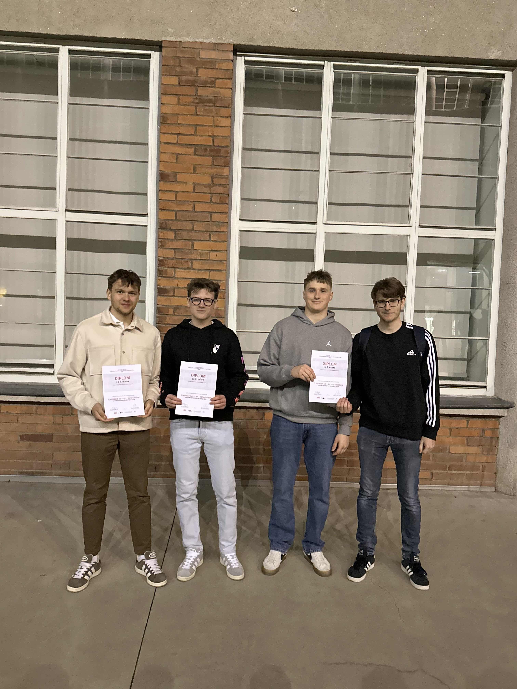

Bc.
Lukáš
Vojtěšek
Ready for new chapter?
Propojuji technické obory, IT a efektivní procesy
Fakulta aplikované informatiky | UTB Zlín

Akademická Cesta
Bezpečnostní management (Ing.)
Fakulta aplikované informatiky
Univerzita Tomáše Bati ve Zlíně
Informační technologie v administrativě (Bc.)
Bakalářské studium
Strojírenství - Metrologie
Maturitní zkouška
Adaptabilita & Proaktivita
Jsem variabilní, velice rychle se učím a snadno si zvykám na nové výzvy. Jsem proaktivní, nesedím s rukama v klíně a rád si neustále buduji nové vědomosti. Mám silný analytický přístup, ale nespokojím se jen s průměrným řešením.
AI
Driven
Práce s AI mě baví – učím se díky ní za chodu, rychle nasávám nové informace a dokážu tak být daleko víc produktivní.
ChatGPT / Claude / Gemini / Copilot / Gamma
Procesy & Optimalizace
Záleží mi na tom, aby věci fungovaly chytře a hladce. Rád hledám cesty, jak optimalizovat zaběhlé procesy a odstraňovat zbytečné překážky. Nebojím se ptát "proč to tak děláme?" a navrhovat řešení, která šetří čas i energii celému týmu.
Samostatnost & Spolehlivost
Nesedím a nečekám, co se stane. Jsem proaktivní, dokážu si zorganizovat práci a vzít si na starost svěřené úkoly od začátku do konce. Krizové situace beru jako výzvu k řešení, ne jako důvod k panice. Vždy se snažím dodat výsledek, na který je spolehnutí.

Projektový
Týmový Lídr
Úspěšně jsem koordinoval tým během náročné meziškolní soutěže ve videomappingu. Odpovídal jsem za rozdělení rolí, hlídání termínů a synchronizaci kreativních výstupů. Výsledkem této efektivní organizace bylo výborné třetí místo v silné konkurenci.
Pracovní Historie
Meetcloud
Externí projektant
Působím jako externí projektant pro společnost Meetcloud. Mám na starosti přípravu, řízení a celkovou koordinaci svěřených projektů.
Brigády a Provozní Praxe
Tažením (Swipe) zobrazte další
Orkla Foods
Logistika & Provoz
Dlouhodobá praxe v provozu s více než 1200+ odpracovanými hodinami. Z původní pozice smluvního vychystávače jsem postupně přebral zodpovědnost za relokaci menších skladových úseků a asistoval při koordinaci interní logistiky.
Solar Global Service
Projektová asistence
Spolupráce na přípravě technické dokumentace pro solární elektrárny, úpravy výkresů v AutoCADu a zajišťování plynulé komunikace informací směrem k realizačnímu týmu.
MESIT Holding
Analýza kvality & Reporty
Provádění kontrolních procesů ve výrobě, zpracování dat z měření a předávání reportů vedení kvality pro další optimalizaci.
PRIMA BILAVČÍK
Laboratorní technik
Práce s přesnými metrologickými daty, dodržování striktních postupů a podílení se na zajištění jakosti produktů.
DFK Cab
Expedice & Zabezpečení
Samostatná příprava a organizace zakázek pro export. Zodpovědnost za kompletaci a kontrolu zásilek před odesláním ke klientovi.
Aircraft & Hanon
Provozní výpomoc
Získání základních návyků v těžkém i lehkém průmyslu. Pochopení bezpečnostních standardů a fungování velkých výrobních celků.